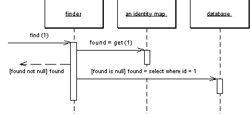

| Home | Articles | Talks | Links | Contact Me | ISA | ThoughtWorks |
Ensure each object only gets loaded once by keeping every loaded object in a map. Lookup objects using the map when referring to them

Some old proverb says that a man with two watches never knows what time it is. If two watches are confusing, you can get in an even bigger mess with loading objects from a database. If you aren't careful you can load the data from the same database record into two different objects. If you then update them both you'll have an interesting time writing the changes out to the database correctly.
Related to this is an obvious performance problem. If you load the same data more than once you're incurring an expensive cost in remote calls. So avoiding loading the same data twice doesn't just help correctness, it can also speed up your application.
A Identity Map keeps a record of all the objects that have been read from the database in a single business transaction. Whenever you want an object, you check the Identity Map first to see if you already have it.
The basic idea behind the identity map is to have a series of maps of objects that have been pulled from the database. In a simple case, with an isomorphic schema, you'll have one map per table in the database. When you load an object from the database, you first check the map. If there's an object in the map that corresponds to the one you're loading, then you return that. If not you go to the database, but as you load the objects you put them into the map for future reference.
There are a number of implementation choices to worry about. As well as these Identity Maps interact with concurrency management, so you should consider Optimistic Offline Lock.
The first thing to consider is what the key should be for the map. The obvious choice is to use the primary key of the corresponding database table. This works well if the key a single column and is immutable. Using a surrogate primary key fits in very well with this approach. You can then use the key as the key in the map. The key will usually be a simple data type so the comparison behavior will work nicely.
You have to choose whether to make the Identity Map explicit or generic. An explicit Identity Map is accessed with distinct methods for each kind of object you need: such as findPerson(1). A generic map uses a single method for all kinds of objects, with a parameter to indicate which kind of object you need, such as find("Person", 1). The obvious advantage is that you can support a generic map with a generic and reusable object. It's easy to construct a reusable Registry that can be used for all kinds of objects and doesn't need updating when you add a new map.
However I prefer an explicit Identity Map. For a start this gives you compile time checking in a strongly typed language. But more than that it has all the other advantages of an explicit interface: it's easier to see what maps are available and what they are called. It does mean adding a method each time you add a new map, but that is a small overhead for the virtues of explicitness.
Your type of key affects the choice. You can only use a generic map if all your objects have the same type of key. This is a good argument for encapsulating different kinds of database key behind a single key object - see Identity Field for details.
Here the decision varies between one map per class and one map for the whole session. A single map for the session only works if you have database-unique keys (see the discussion in Identity Field for the trade-offs on that.) Once you have one Identity Map, the benefit is that you only have one place to go to and no awkward decisions about inheritance.
If you have multiple maps then the obvious route is to have one map per class or per table. This works well if your database schema and object models are the same. If they look different then it's usually easier to base the maps on your objects rather than your tables, as the objects shouldn't really know about the intricacies of the mapping.
Inheritance rears an ugly head here. If you have cars as a subtype of vehicle, do you have one map or separate maps? Keeping them separate can make polymorphic references much more awkward, since any lookup needs to know to look in both maps. As a result I prefer to use a single map for each inheritance tree, but that means that you should also make your keys unique across the inheritance trees, which can be awkward if you use Concrete Table Inheritance
An advantage of a single map, is that you don't have to add new identity maps when you add database tables. However if you tie your maps to your Data Mappers (see below) it won't be any extra burden.
Identity Maps need to be put somewhere where they are easy to find. They are also tied to the process context that you're working in. You need to ensure that each session gets it's own instance of martin, one that's isolated from any other session's instance. As such you need to put the Identity Map on a session specific object. If you are using Unit of Work then that's by far the best place for the Identity Maps since the Unit of Work is the main place for keeping track of data coming in or out of the database.
If you don't have a Unit of Work then the best bet is a Registry that's tied to the session.
As I've implied here, you usually see a single Identity Map for a session, otherwise you need to provide transactional protection for your Identity Map, which is more work than any sane developer would try to do. However there are a couple of exceptions. The biggest one is to use an object database as a transactional cache, even if you use a relational database for record data. While I haven't seen any independent performance studies, the possibilities suggest it's worth taking a look at and many people I respect are big fans of this approach to improve performance.
The second exception is for objects that are read-only in all cases. If an object can never be modified, there's no need to worry about it being shared across sessions. In performance intensive systems it can be very beneficial to load in all read-only data once and have available to whole process. In this case you would have your read-only Identity Maps held in a process context and your updatable Identity Maps at a session context. This would also apply to objects that aren't completely read-only, but are updated so rarely that you don't mind flushing the process wide Identity Map and potentially bouncing the server when it happens.
Even if you're inclined to have only one Identity Map you could split it into two along read-only and updatable lines. You can avoid clients having to know which is which by providing an interface that checks both maps.
In general you need to use an Identity Map to manage any object that is brought from a database and modified. The key reason you need it is because you don't want a situation where you have two in-memory objects that correspond to a single database record, where you might modify the two records inconsistently and thus confuse the database mapping.
Another value in Identity Map is that it acts as a cache for database reads, which means you can avoid going to the database each time you need some data.
One case where you may not need an Identity Map is for immutable objects. If you can't change an object, then you don't have to worry about modification anomalies. But Identity Map still have advantages. The most important of these is the performance advantages of the cache. Another is that it helps to avoid problems where people use the wrong form of equality test, a problem that's prevalent in Java where you can't override ==.
Another case where you don't need a Identity Map is for a dependent object. Since their persistence is controlled by their parent, there is no need for a map to maintain identity. However although you don't need a map, you may want to provide one if there's a need to access the object through a database key. In this case the map is merely an index, so it's arguable whether it really counts as a map at all.
For each Identity Map we have a map field and accessors.
private Map people = new HashMap();
public static void addPerson(Person arg) {
soleInstance.people.put(arg.getID(), arg);
}
public static Person getPerson(Long key) {
return (Person) soleInstance.people.get(key);
}
public static Person getPerson(long key) {
return getPerson(new Long(key));
}
One of the annoyances of Java is the fact that long isn't an object, therefore you can't use a long as an index for a map. This isn't as much of a pain as it can be, since we don't actually do any arithmetic on the index. The one place where it is irritating is when you want to retrieve an object with a literal. You hardly ever need to do that in production code, but you often do in test code. So I've included a getting method that takes a long to make testing easier.
 |  |